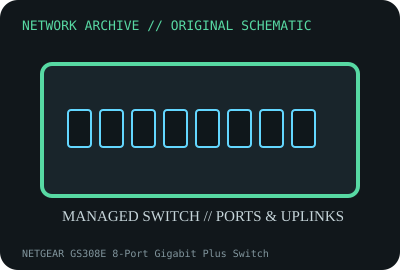

[ MODEL-SPECIFIC NETWORK HARDWARE ]
NETGEAR GS308E 8-Port Gigabit Plus Switch
Eight-port fanless Gigabit smart-managed desktop switch. Confirm exact product label and revision before applying specifications.

IDENTIFICATION: Confirm manufacturer PID, hardware revision, device ID or module suffix. Nominal standards/link rates are not measurements of payload performance.
Exact specifications and compatibility
| Dedicated subcategory | Managed switches |
|---|---|
| Exact product/model | NETGEAR GS308E 8-Port Gigabit Plus Switch |
| Bus, ports and physical interface | Eight 10/100/1000BASE-T RJ-45 ports; external DC power adapter; no SFP or PoE ports. |
| PHY, radio or protocol | Smart Managed Plus Layer 2 features such as VLAN, QoS and loop detection are dependent on model firmware and management utility. |
| Nominal rate (not measured) | 16Gb/s nominal switching capacity across full-duplex ports; not a measured application result. |
| Measured throughput | No measured benchmark is claimed for a physical specimen. A valid result must record host/peer, link partner, media/cable, driver/firmware, traffic pattern, test tool and duration. |
| Drivers, OS and firmware | NETGEAR Plus utility/web management and firmware by model revision; modern OS support for older utilities may vary. |
| Compatibility | Requires Gigabit peer/cabling; exact power-supply voltage, polarity and current must match product label. Configuration features depend on firmware. |
| Variant warning | GS308E is managed Plus; not unmanaged GS308, PoE GS308EP, or GS308T managed switch. Check hardware revision and firmware/model suffix. |
Model and revision notes
GS308E is managed Plus; not unmanaged GS308, PoE GS308EP, or GS308T managed switch. Check hardware revision and firmware/model suffix.
NETGEAR Plus utility/web management and firmware by model revision; modern OS support for older utilities may vary.
Requires Gigabit peer/cabling; exact power-supply voltage, polarity and current must match product label. Configuration features depend on firmware.
Archival, ESD and preservation notes
Record revision, firmware, MAC, power supply and VLAN settings (without secrets). Unplug before cleaning and keep RJ45 ports dry.
Document source URL, access date, document revision and specimen label/condition. Preserve without credentials or private configuration.
Primary manufacturer and standards sources
- NETGEAR GS308E official product/support pagePrimary manufacturer or standards documentation; verify exact SKU and host revision.
- NETGEAR GS308E documentation/downloadsPrimary manufacturer or standards documentation; verify exact SKU and host revision.
- IEEE 802.3 Ethernet standardsPrimary manufacturer or standards documentation; verify exact SKU and host revision.
Manufacturer statements cover the named part or its documented product family; the exact labeled revision and vendor compatibility list take precedence.